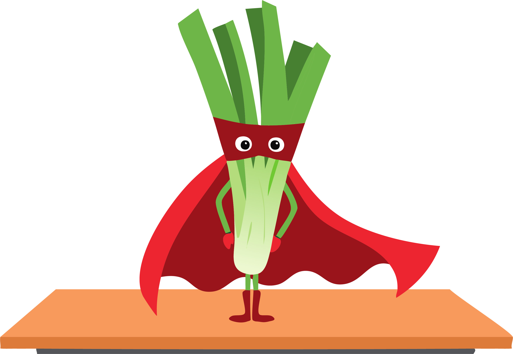
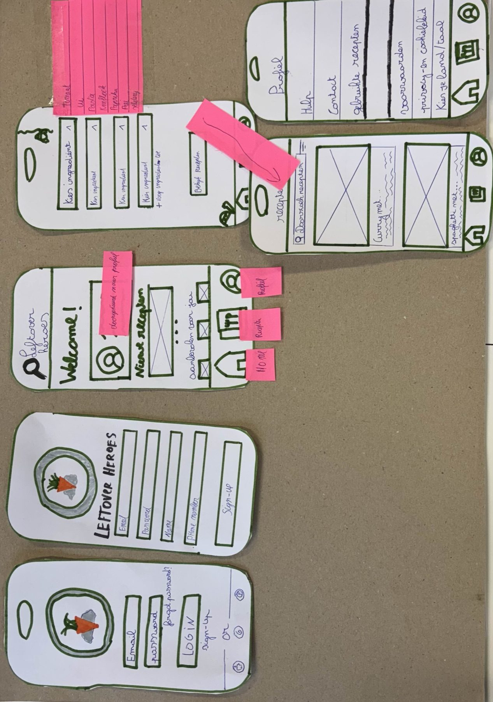
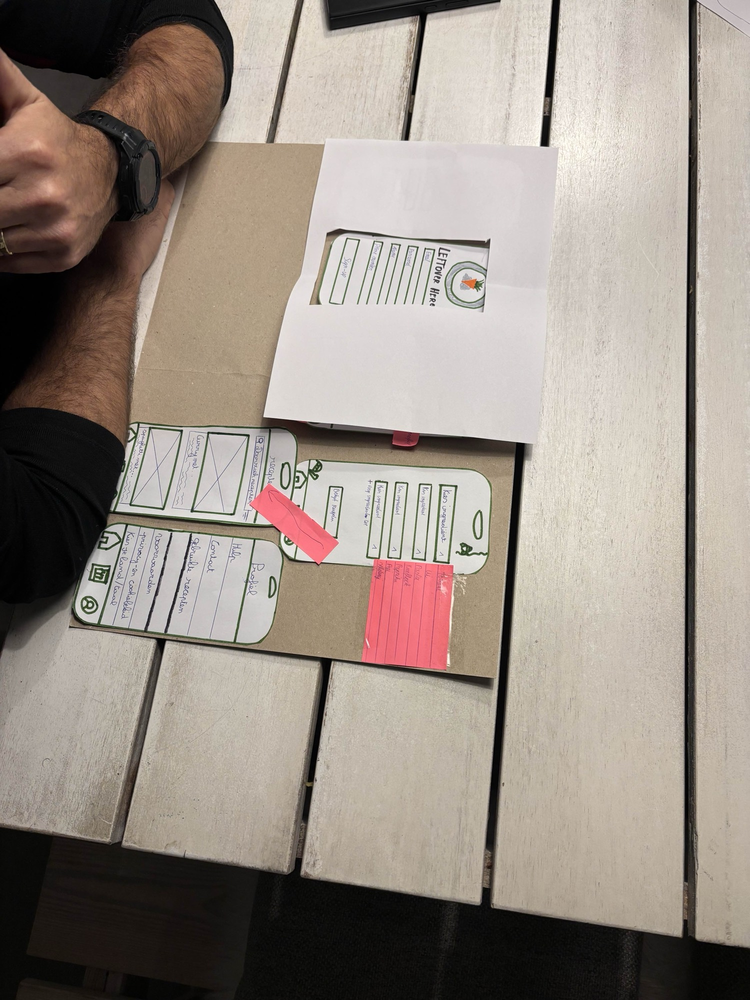
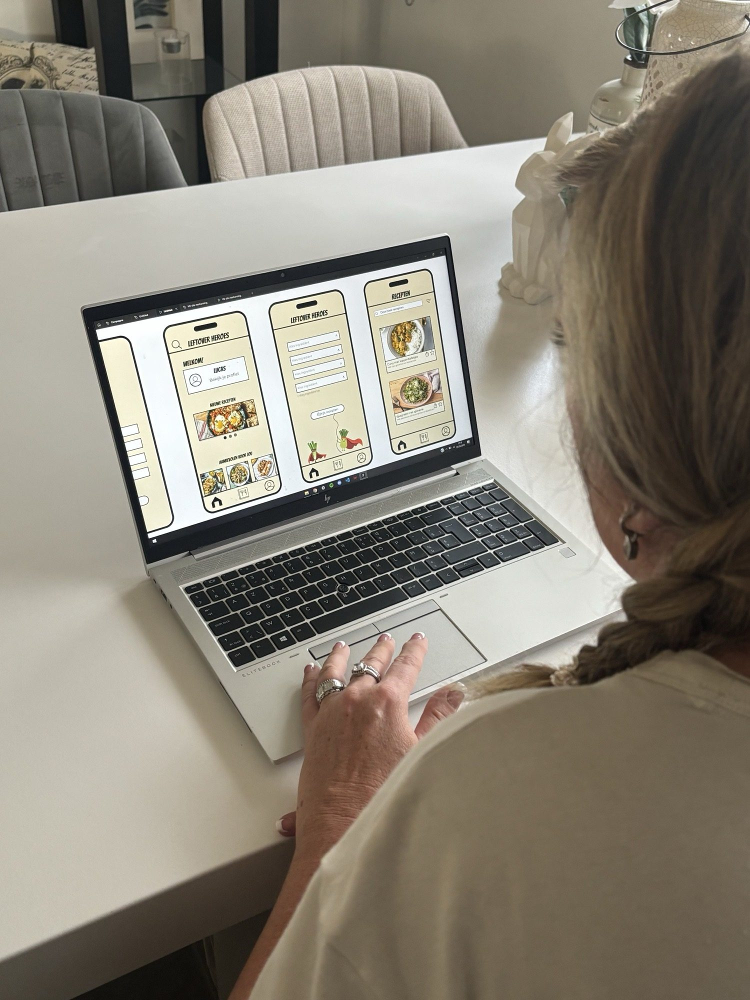
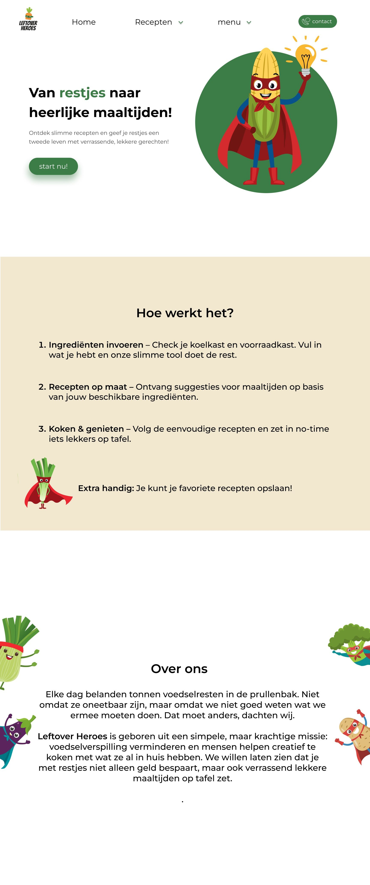
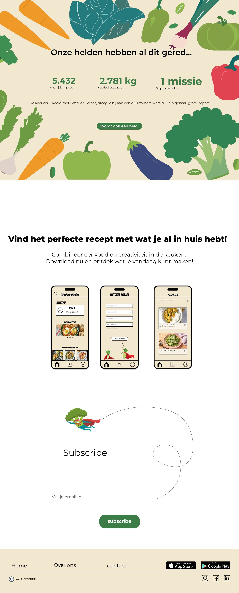

Overview
A cross-media campaign brief from Voedingscentrum and the Lectoraat Voeding, Leefstijl en Beweging at Zuyd, aimed at helping families with children waste less food at home. Brett and I focused the whole concept on leftovers, because that is where most of the waste actually happens in a household, and we built the idea around the thought that what is already sitting in your fridge can become the hero of the next meal instead of a reason to feel guilty.
We turned that into Leftover Heroes, a small platform where you type in the ingredients you already have and get recipes back, wrapped in a cartoon visual language of vegetable superheroes. The superhero framing was the key decision because it made the whole campaign feel playful and empowering instead of preachy, which mattered a lot for the audience, and this was also the project where I realised I do better work on a team than on my own.



The campaign

one of the campaign posters, drawn in Illustrator to live on shop windows and community boards.

